L'intelligence artificielle au service de l'agriculteur moderne. Gérez, diagnostiquez et optimisez vos cultures en temps réel.
Veille technologique
Avant de définir notre solution, nous avons étudié les usages de l'intelligence artificielle dans l'agriculture, les problématiques rencontrées sur le terrain et les solutions existantes.
Nous avons croisé des sources institutionnelles, scientifiques et applicatives : ministère de l'Agriculture, INRAE, Météo-France, FAO, outils agricoles existants et applications de diagnostic.
Identifier un besoin réel du secteur agricole, puis imaginer une application mobile simple intégrant de l'IA, de la météo, une carte interactive et des alertes utiles à la prise de décision.
Plusieurs enjeux ressortent et justifient la création d'un outil d'aide à la décision.
Les cultures exposées aux épisodes de chaleur, gel, sécheresse ou fortes pluies.
Le manque d'eau impacte le rendement et oblige à anticiper l'irrigation.
Maladies et ravageurs à repérer rapidement pour éviter des pertes.
Pratiques évoluant vers une utilisation raisonnée des traitements.
Météo, diagnostics et parcelles souvent séparés, compliquant la décision.
Problématique retenue
Cette problématique nous conduit à proposer Agria, une application mobile d'aide à la décision agricole.
La veille s'appuie sur des sources institutionnelles, scientifiques et applicatives.
À propos
Agria est une application mobile pensée pour les agriculteurs d'aujourd'hui. Elle combine intelligence artificielle, données météo en temps réel et diagnostic agronomique pour vous aider à prendre les meilleures décisions.
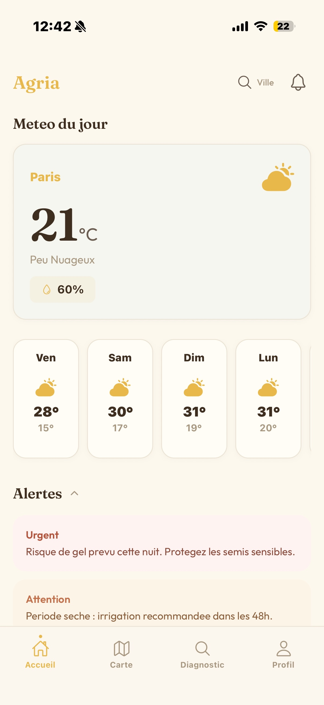
Tableau de bord
Le tableau de bord centralise toutes les informations essentielles. En un coup d'œil, consultez la météo, les alertes prioritaires et l'état de vos parcelles.
Température en direct via OpenWeatherMap. Prévisions 5 jours intégrées.
Scoring additif multi-facteurs — Danger, Vigilance ou Info selon les conditions.
Visualisez vos champs, leur culture et leur état de santé depuis le dashboard.
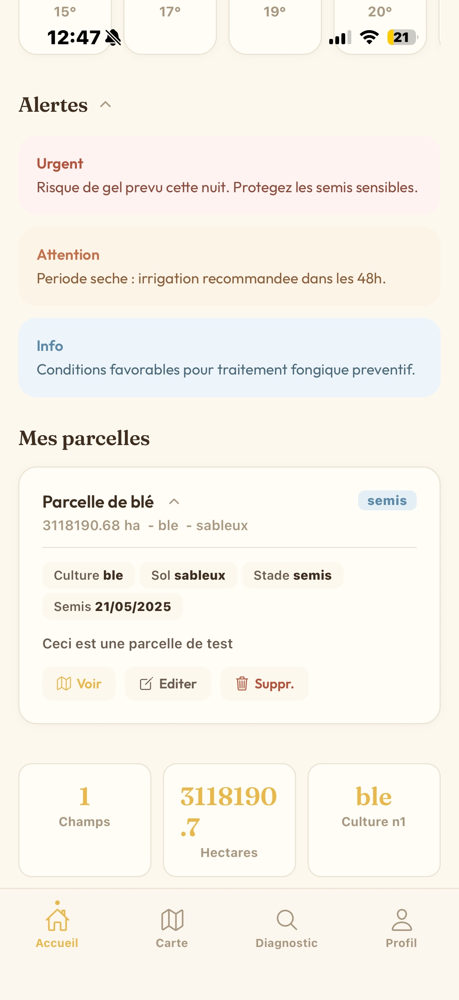
Système d'alertes
Notre moteur évalue 7 facteurs météo en parallèle et calcule un score de risque. Rafraîchissement manuel ou automatique via webhook Make.com.
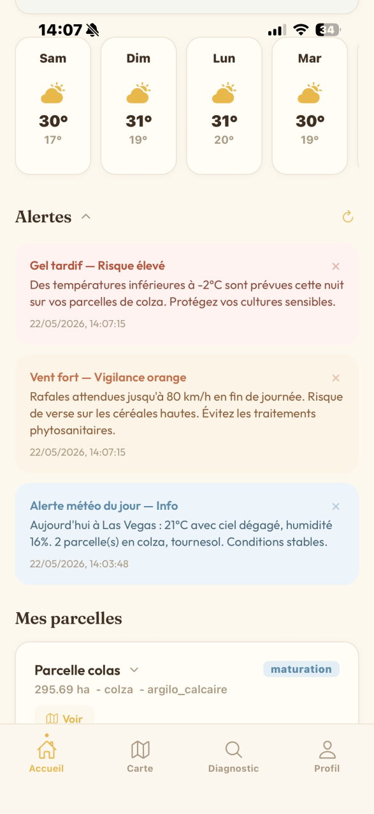
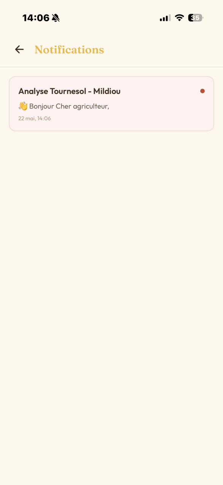
Notifications
Toutes vos analyses et alertes centralisées. Recevez les rapports détaillés de l'IA directement sur votre téléphone via les notifications push.
Compteur visible dans le header de l'app pour ne rien manquer.
Glissez une notification vers la gauche pour la supprimer.
Développez pour lire le diagnostic détaillé envoyé par l'IA.
Fonctionnalité clé
Notre moteur IA croise les symptômes observés avec les données météo locales pour diagnostiquer et recommander des traitements en temps réel.
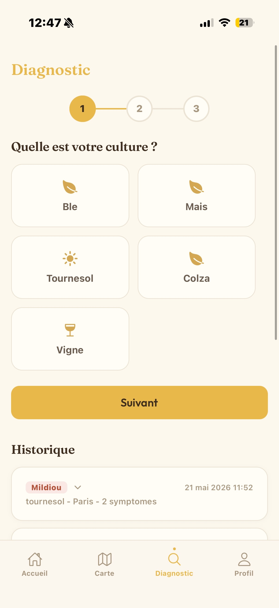
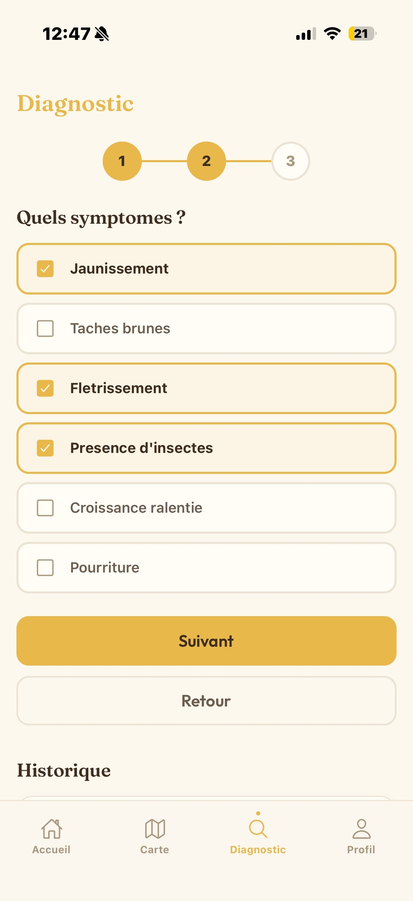
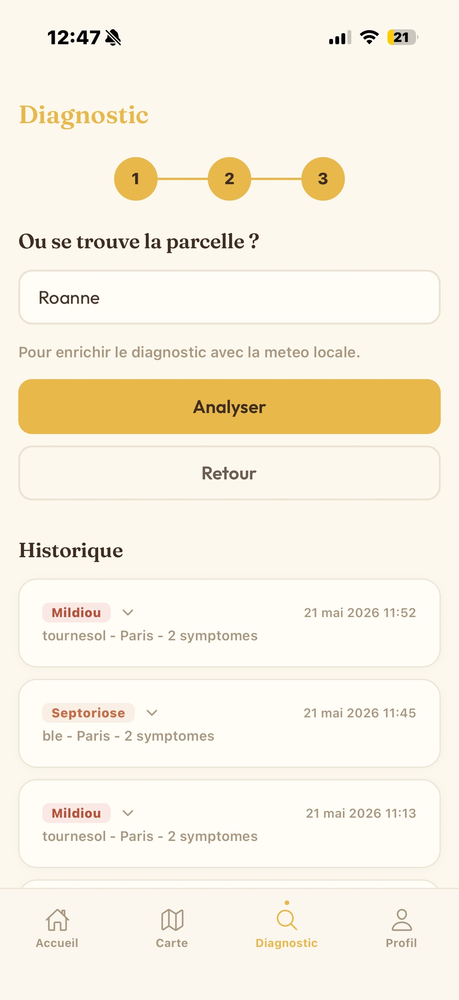
Carte interactive
En quelques gestes, délimitez vos champs directement sur la vue satellite. Chaque parcelle est géolocalisée.
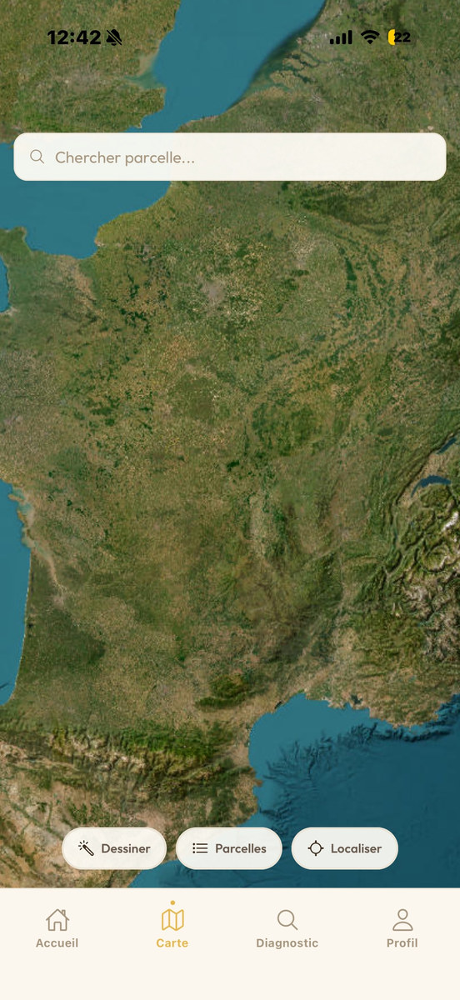
Vue satellite de France. Zoomez ou recherchez par nom.
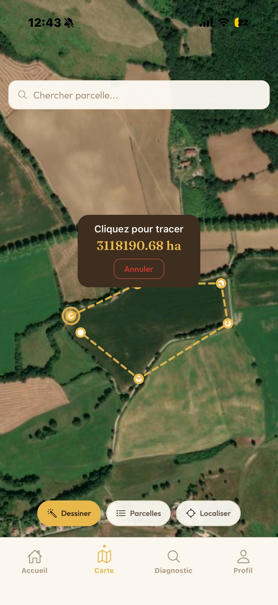
Cliquez point par point. Surface calculée automatiquement.
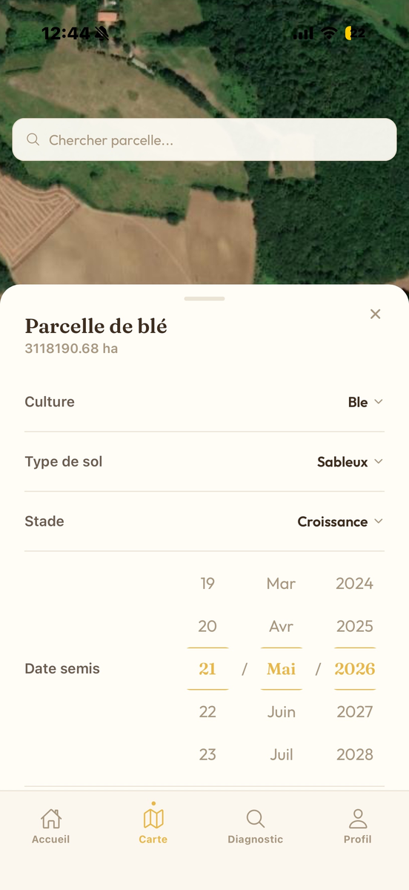
Nom, culture, sol, stade, semis — modifiable à tout moment.
Délimitez vos champs sur la vue satellite et retrouvez-les instantanément.
La surface en hectares est calculée en temps réel pendant le tracé.
Modifiez culture, sol, stade et date de semis à tout moment.
Profil & Exploitation
Avatar personnalisé, statistiques de parcelles, cultures actives et sections repliables. Édition du profil, changement d'email et de mot de passe intégrés.
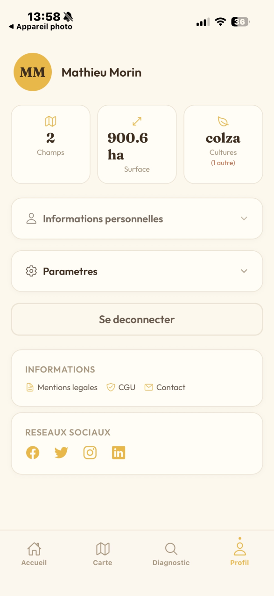
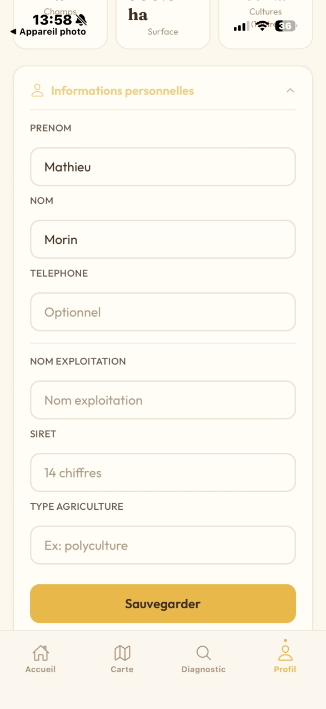
Back-office
Un panneau d'administration complet pour superviser l'application : statistiques, gestion des parcelles, utilisateurs et logs d'actions.
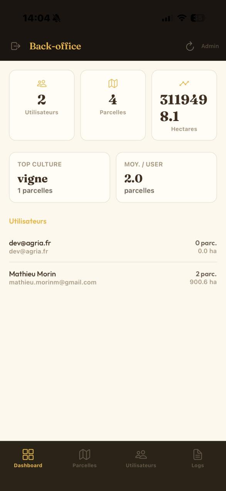
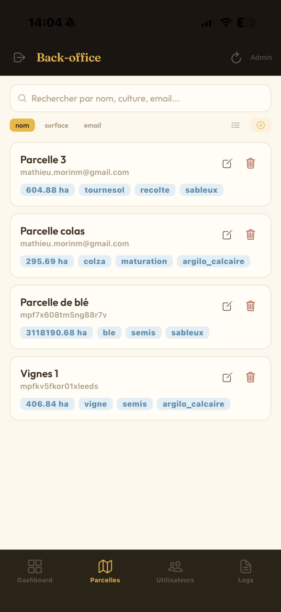
Stack technique
Application mobile cross-platform iOS & Android. Expo Router, TypeScript strict, animations Reanimated.
Persistance hybride cloud/local. Authentification, base temps réel et stockage hors-ligne.
Base de 15 maladies, scoring de symptômes pondéré, recommandations agronomiques ciblées.
Double source météo : données temps réel + prévisions 7 jours avec historique.
Automatisation no-code : webhooks pour alertes météo et rapports de diagnostic détaillés.
Carte interactive satellite, géocodage OpenStreetMap et dessin de polygones.
Architecture technique
Chaque intégration a été sélectionnée pour sa fiabilité et sa richesse de données.
L'API doit servir un besoin métier direct : météo, géolocalisation, synchronisation ou diagnostic.
On privilégie les solutions rapides à intégrer, fiables et riches pour un projet agricole concret.
Les alternatives moins adaptées sont gardées comme points de comparaison.
| Service | Données disponibles | Limite gratuite | Risque | Score |
|---|---|---|---|---|
| OpenWeatherMap✓ Retenu | Température, humidité, vent, prévisions 5 jours | 1 000 req/jour | Faible | 9/10 |
| Météo-France API | Données officielles France, prévisions locales | 500 req/jour | Moyen | 7/10 |
| Weatherbit | Données agro-météo, indices UV | 500 req/jour | Faible | 7/10 |
| Service | Fonctionnalités clés | Auth | Temps réel | Score |
|---|---|---|---|---|
| Firebase✓ Retenu | RTDB, Auth, Storage, Hosting | Natif | Natif | 9/10 |
| SupabaseÉvalué | PostgreSQL, Auth, Storage, Edge Functions | Natif | WebSockets | 8/10 |
| Backend custom (Node.js) | Contrôle total, logique métier sur mesure | À développer | À développer | 5/10 |
Documentation claire, SDK disponible, limite gratuite suffisante et prévisions 5 jours intégrées.
Écosystème tout-en-un adapté à React Native. Auth, stockage et base temps réel sans serveur.
Diagnostic agronomique en règles métier croisées avec la météo. Zéro dépendance externe.
Positionnement
Aucune solution gratuite et mobile ne combine à la fois cartographie, diagnostic IA, météo et gestion multi-utilisateurs. C'est le positionnement unique d'Agria.
| Fonctionnalité | Agria | Plantix | MesParcelles |
|---|---|---|---|
| Diagnostic IA des cultures | ✓ 3 étapes | ✓ Photo IA | ✗ |
| Cartographie & parcelles | ✓ Satellite | ✗ | ✓ |
| Météo & alertes | ✓ Temps réel | ✗ | ~ OAD |
| Multi-utilisateurs | ✓ | ✗ | ✓ |
| Mobile (iOS + Android) | ✓ | ~ Android | ✓ |
| Gratuit | ✓ | ✓ | ✗ Abonnement |
Feuille de route
Agria évolue pour répondre aux besoins croissants des agriculteurs et des coopératives.
Une application, une vision
Agria — L'agriculture du futur, disponible aujourd'hui.
Nous espérons qu'Agria vous a convaincu du potentiel de l'intelligence artificielle au service de l'agriculture de demain.
Agria · L'agriculture intelligente